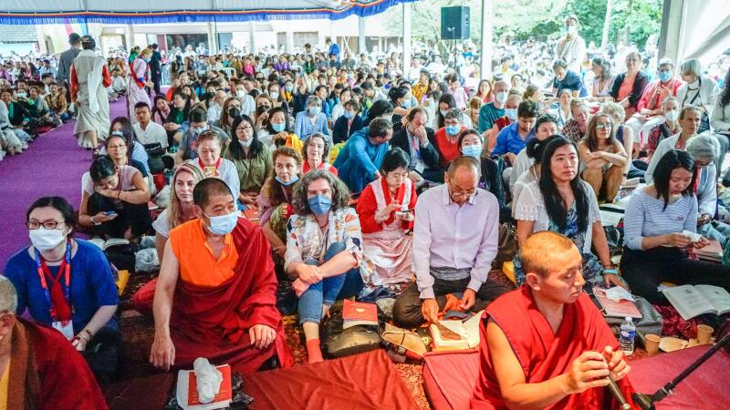

Should Buddhists Be Social Activists?
Buddhism is widely admired in the West for its commitments to progressive social activism. Saffron-clad monks march to promote peace or condemn repressive governments. The Dalai Lama lauds human rights and assures packed audiences that ‘the Buddha would be green’. When the Vietnamese Zen monk, Thích Nhất Hạnh, died this January, he was mourned by high-profile political activists as well as members of the Buddhist monastic community. Buddhists are common sights at marches, protests, sit-ins, and occupations. Magazines like Tricycle and The Lion’s Roar regularly feature articles on capitalism and social injustice as well as mindfulness and meditation. In my local bookstore, the Buddhism section has many books with titles like The Dharma of Social Justice.
The perception of alliances between the teachings of the Buddha and modern social and environmental activism is one of the main reasons for the positive perception of Buddhism in many Western countries. The Buddha’s teachings on suffering and compassion turn out to be allied to the concerns of many feminist and environmental movements. Equality, tolerance, and social justice get confidently related to the discourses that the Buddha preached one and a half thousand years ago. From his criticisms of the caste system to the emphasis on liberating beings from suffering, the Buddha – a man born a prince only to abandon his inherited wealth and power – thus emerges as an acceptable and attractive spiritual teacher.
‘Engaged Buddhism’
Is this image of the Buddha as a social activist ahead of his time accurate? It wasn’t always the case that perceptions were so favourable. Late-nineteenth century American, French and English writers saw Buddhism as a pessimistic doctrine encouraging passivity and retreat from life. Life, love, and hope – it was thought – are absent from the life of the monk. For one poetic critic, Buddhists are ‘living under a sky from which no sunlight ever streams’, their world all ‘sadness and hopelessness’. Many of the critics were Christians contrasting the good works, hope, and energy of their own faith with what an early scholar called the ’deep and miserable melancholy’ of Buddhism. Not all, though. Nietzsche was a harsh critic of Christianity but also condemned Buddhism as a ‘life-denying’ creed. There were also admirers of Buddhism – like the Indophile English Theosophists or the enthusiastic readers of Edwin Arnold’s epic poem The Light of Asia (which sold a million copies and was later made into a Broadway play).

What changed to change the image of Buddhism from one passivity and pessimism to one of energetic social activism? It is a long story. Historians and Buddhist scholars all emphasise that ‘Buddhism’ is many things, not a single tradition, and that politics, culture, trade, colonialism all played their parts. I will not pretend to survey all of that work. Many scholars seem to endorse the ‘activist’ image – which is usually called ‘engaged Buddhism’ – even if there are also exceptions. I suspect what most people think of as ‘Buddhism’ is really shaped by some kind of engaged Buddhist image. I think that’s a problem: the fidelity of those images to the teachings of the Buddha is very questionable.
By ‘the teachings’, I mean the suttas or discourses that are taken to be the earliest statement of the Buddha’s teachings. It is often hard work to read and interpret these suttas. Many are extremely repetitive and need careful scholarly handling. Most admirers of Buddhism therefore understandly rely on the huge popular literature on Buddhism. Endless books, blogs, and podcasts offer explainers about compassion and mindfulness, or ‘advice for living’. Such resources are useful, but do not always faithfully report what’s in the suttas. True, much of the content of the suttas will seem odd, obscure, or even unacceptable to modern minds. In those cases, offending content often gets airbrushed-out, explained away, or just ignored. In other cases, Buddhist concepts are left strategically vague – their original meanings are omitted, so that one can project onto them whatever other meanings one likes.
I think a lot of engaged Buddhism relies on strategic vagary about the content of the Buddha’s teachings. Two good places to look are claims typically made about compassion and the ‘overcoming of suffering’.
Compassion
Everyone knows the heart of the Buddha’s moral teachings is compassion. The Pali term is karuna – a term that recurs all through the suttas and is one of the ‘divine abodes’ that marks an enlightened being. It is easy to see why engaged Buddhism would focus on compassion. In a world scarred with violence, inequality and avoidable misery, what is needed is compassion and related virtues such as love and empathy. Confronted with a world the Buddha described as ‘burning’ with ‘hatred, greed, delusion’, we constantly encounter people whose very survival will depend on our capacity for compassion. From these ideas, one can easily see a route to radical activist projects aiming at creating a more compassionate world.
The path from Buddhist compassion to social activism may seem clear and direct. Is it, though? ‘Compassion’ has all sorts of meanings in English – kindness, altruism, feeling sympathy for others, caring and so on. Moreover, the Buddha offered us complicated accounts of the nature and practice of karuna. To see if there is a path from compassion to activism, we ought to look at the suttas.
Compassion has two main senses in the suttas. The first is a commitment to personal responses to specific instances of the suffering of the beings one encounters. Helping an injured dog or tending to a sick friend or feeding a homeless person would all be instances of karuna. Compassionate acts are immediate, direct, tangible. Of course, this is consistent with certain kinds of modern moral action – volunteering at a shelter, caring for elderly neighbours, being a caring friend. But karuna in this sense is different from ‘bigger’ sorts of moral activism. In the suttas there is no sense that karuna should involve changing social structures. On the contrary, the Buddha dissuades his followers from social reformism. Similar advice is also given to ‘householders’ – ordinary, non-monastic people – in texts like the Siggalovada Sutta. There’s also no sense that acts of compassion should take place at a global level. The focus is small-scale, local, intimate, direct.
The goals are also different. The Karunasutta explains that karuna matters because it will lead to ‘peace from bondage’ which helps one achieve mokṣa – final, permanent liberation from the cycle of rebirth. There is no reference to modern goals like social justice or economic equality, neither of which feature among the Buddha’s goals (he was happy enough for some people to be much wealthier than others, just as long as they acquired and used their riches wisely). Compassion is treated in similar ways in the Mahayana tradition with its ideal of the bodhisattva, an enlightened being who selflessly postpones their own ‘liberation’ to work for that of others. The great Mahayanists, Chandrakirti and Santideva, each rejected social activism. In their view, the best instance of compassion is teaching other people the Dhamma.

Photo by Norbu Gyachung on Unsplash
I mentioned there is a second sense of karuna. This is a sort of ‘boundless compassion’ felt by the enlightened being for all other creatures. Could this be a path to social activism aiming at changing the world for the sake of all people? No, since that would not make sense given what the Buddha says about this sort of karuna. ‘Boundless compassion’ is not a virtue we can exercise for the sake of specific people – the victims of oppression, say, or those suffering due to treatable diseases. It is a transformed way of experiencing the world. The Buddha’s moral teachings are really a sort of ‘moral phenomenology’ – a set of practices for disciplined transformations of how we tend to experience and engage with the world.
Peter Harvey, a distinguished scholar, explains ‘boundless compassion’ to consist in ‘the aspiration that beings be free from suffering’. It is one of the four ‘divine abodes’ (brahmavihārās) – states that make our minds akin to those of the brahma gods. When we inhabit a divine abode, we experience the world as they do. A second ‘abode’ is ‘equanimity’ (upekkhā) – a deep sense of imperturbability. Contrary to activist emphases on wrongful injustice, this equanimity is rooted in a recognition that all beings suffer or flourish in accordance with their karma. This is one reason the Buddha describes certain rebirths – as an animal or a ‘hungry ghost’ – as an ‘unfortunate destiny’. A terrible rebirth is a consequence of bad karma (which is why there will always be creatures and social groups whose state is ‘unfortunate’).
‘Boundless compassion’ and equanimity together are not a call to arms for the sake of the victims of injustice around the world. An enlightened being certainly desires they be liberated from suffering, but they do not experience anger or frustration at their circumstances. There is no raging against the elite, no angry calls for revolution, no ardent political campaigning. An enlightened being coolly experiences the truth that suffering is integral to the world: the First Noble Truth is that ‘existence is suffering’.
If this is a truth of the world, then is this a way to connect the teachings of the Buddha to social activism?

David E. Cooper: Nanavira Thera
What is especially intriguing for students of eremitism is the intimate interplay of personal motives and philosophical commitments behind Nanavira’s decision to live alone.
Suffering
‘Suffering’ is another ambiguous term with different meanings in everyday language and the Buddhist suttas. We can talk of different kinds of suffering (pain, starvation, loneliness, social alienation, political estrangement) with different causes (from bad treatment by others to bad personal decisions to bad ways of organising our shared world). The diversity of suffering was certainly a major theme of the Buddha’s discourses. As he said in several suttas, ‘What I teach now, O monks, is suffering and the cessation of suffering’. The Four Noble Truths describe the fact, origins, and cessation of suffering. The whole objective of Buddhism is ‘the overcoming of suffering’. If so, is this a basis for engaged Buddhist calls for radical action?
The Pali term translated as ‘suffering is dukkha. It also gets translated as ‘stress’ or ‘dis-ease’ or ‘unsatisfactoriness’. Many scholars leave it untranslated. The Buddha often repeated this explanation:
Birth is dukkha, ageing is dukkha, death is dukkha; sorrow, lamentation, pain, grief, and despair are dukkha; association with the unbeloved is dukkha; separation from the loved is dukkha; not getting what is wanted is dukkha.
Clearly, this is extremely broad. Every aspect of life is dukkha – the beginning, the end, and every mid-stage and the whole experience of things in terms of desires and dislikes. Existence is suffering, as the First Noble Truth tells us, not certain kinds of existence, but existence itself. How does this relate to social activism of the sort pursued by engaged Buddhists?
Engaged Buddhists always appeal to the Buddha’s goal of ‘overcoming suffering’. In our world, suffering takes the forms of poverty, social exclusion, exploitation, and violence and the causes are political corruption and greed, economic inequality, and the environmental emergency. Engaged Buddhists tend to focus on social change, their aim being ‘to uplift individuals, reform societies, and participate energetically in the political and economic spheres’. For Sallie B. King, the ‘Buddhist worldview, values, and spirituality’ encourages engagements with ‘political, social, economic, racial, gender, environmental, and other problems’. In the simpler slogan attributed to Thích Nhất Hạnh, engaged Buddhism just is Buddhism. ‘Saving the planet’, promoting human rights, protesting, climate rebellion … all these emerge as ways of helping ‘overcome suffering’.
I doubt the Buddha would agree that social activism counts as ‘overcoming suffering’. Ignoring the specific meanings of dukkha looks like another case of strategic vagary – omitting the specifically Buddhist meanings of concepts so one can project onto another one’s own preferred meanings. Here are three complications.
To start with, dukkha, for the Buddha, is generated by deep features of reality itself – hence ‘existence is suffering’. Dukkha is not generated by social institutions or ideologies. Even if we abolished patriarchy and capitalism, we will still be subjected to dukkha. The truth is that dukkha cannot be removed from the world – it is one of the ‘Three Marks of Existence’. Its deep causes are akin to laws of nature. There is nothing we can do to alter them to our own advantage. Even the devas – the gods – are bound by dukkha and karma. The Buddha agreed that social and economic conditions can increase our suffering. It’s worse to be reborn poor, ill, lower-caste, or a woman if one is a human, and terrible to get reborn as an animal. In these cases, the dreadfulness of their lives is partly due to the callousness and selfishness of others. But this does not justify radical action for social reform.
Overcoming dukkha – this is the second complication – is a matter of disciplined moral self-transformation. It requires us to achieve ‘right view’ (samma ditthi), a lucid understanding of the human condition unobstructed by ‘delusions’. Belief in an enduring self is the most famous of these stubborn false beliefs. ‘Right view’ is the first step of the Eightfold Path. It involves radical transformation of our actions, thoughts, habits, perceptions, and responses to things. The goal is to purge oneself of the attachments, cravings, desires, and ‘wrong views’ which set up objects of desire and then feed our ‘grasping-craving’ for them. In effect, then, ‘overcoming suffering’ is a personal moral project, not a collective social project. The aim is not to remove suffering from the world, but rather to change how one experiences and engages with the world in ways that reduce one’s own susceptibility to dukkha.
An engaged Buddhist who insists that there’s still a role for some sort of social change run into a third complication. The Buddha condemns social activism and political participation. Monks who asked about politics are told to ‘keep to your own preserves’ and be ‘islands unto yourselves’. ‘Right speech’, one factor of the Path, includes refusing to discuss politics, war, or other contentious social issues. The Buddha abandoned royal life to seek enlightenment and, once he achieved it, never once expressed any desire for political power. When some common people asked how to achieve social harmony, they are advised to obey their laws, pay their taxes, and honour their traditions and elders. The desire for social and political engagement is an expression of ‘false views’ and creates powerful attachments and desires – precisely the causes of dukkha we’re supposed to be overcoming.

Ian James Kidd: Gardens of Refuge
From the Garden of Eden to urban allotments, gardens have accompanied and enriched human history and culture from ancient times to now. In this article, Ian James Kidd traces the spiritual history of gardens as places of refuge from the world.
Fidelity
I doubt the Buddha’s teachings on karuna and what it means to ‘overcome suffering’ endorse social activism aimed at grand goals like ‘saving the world’. Claims to the contrary are guilty of strategic vagary and other ways of playing fast and loose with the suttas. Sometimes, activists deliberately change the suttas to make them suit their needs. The noted Indian activist B.R. Ambedkar – a fierce critic of sexism and caste – edited a set of suttas titled The Buddha and his Dhamma but added to several of them remarks about gender equality and low-caste groups. While recruiting the authority of the Buddha makes sense, it should not come at the cost of the distortion of his teachings.
Engaged Buddhists might respond to these points in many different ways. Some urge an updating of the Buddha’s moral teachings. Some admit the complications, but gloss over them, seeing Buddhism as a resource to be used as one wills. Others will reject the ideal of fidelity to teachings and tradition as one more obstacle to progressive social change. More scholarly critics will push back on issues of interpretation or point out doctrines I’ve not mentioned. Why not interpret karuna to be consistent with collective action? What about the ideal of the cakkavartin, the ‘Wheel-Turning Emperor’, who governs the world in line with the Dhamma? What about the discussions of the lokadhamma, the ‘worldly conditions’, like praise and gain, which keep the social world turning? Do we really need to endorse the metaphysical claims about dukkha as a ‘Mark of Existence’? Don’t the moral and political realities of our 21st century world of globalised technological modernity demand a different kind of Dhamma?
I see these as serious and interesting questions. Despite my scepticism about the ‘fit’ between social activism and what the Buddha taught, there are no quick knock-down arguments. We must read the suttas, take them seriously, admit awkward claims, explore differences, strategic vagary, and resist the assumption that his moral vision must align with ours.
I expect the conclusions will be discomfiting for engaged Buddhists. If I am right, the Buddha is not the liberal, feminist egalitarian social activist they’ve been taught to expect. But it’s better to have a truer discomfiting understanding than a false comforting one. If nothing else, such truthfulness and fidelity is one way we can do justice to the Buddha.
This is the first part of a series of articles by Ian James Kidd on Buddhism and social activism. Continue reading right here:

Changing the world, challenging patriarchy, revolution, and the whole ethos of radical reformism is nothing like what the Buddha taught.
◊ ◊ ◊

Ian James Kidd on Daily Philosophy:
Cover image by Laurentiu Morariu on Unsplash.